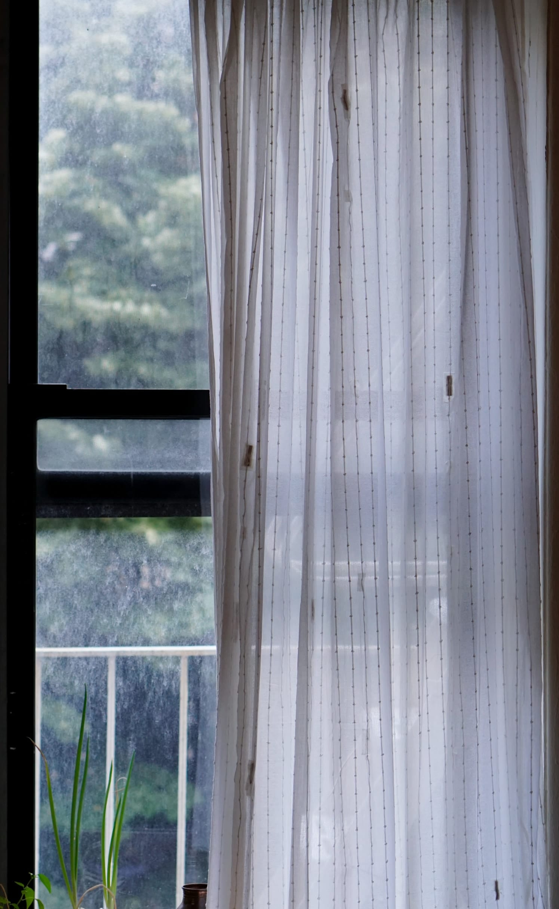
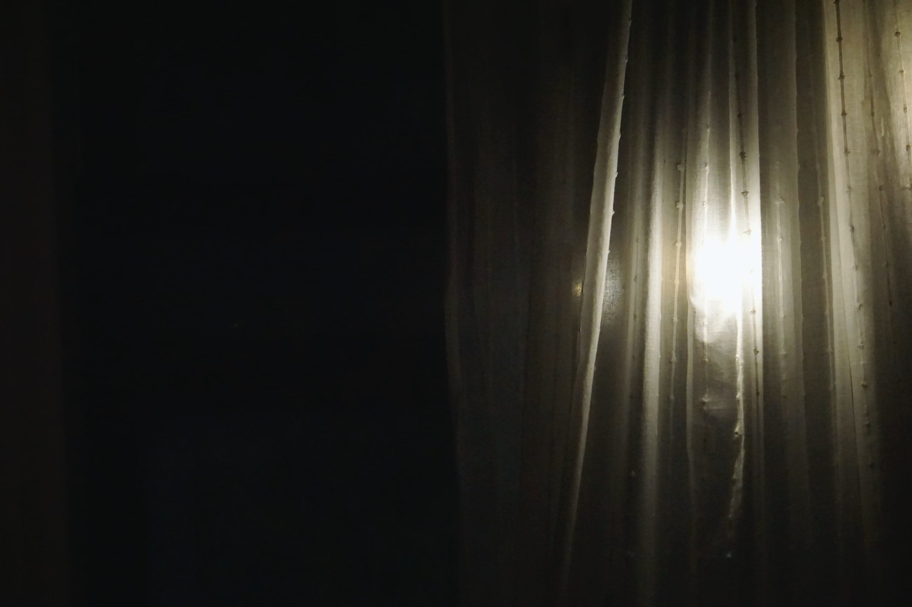

Do Curtains Dream at Night?
Overview
I've always wondered what a life of a curtain is like. Looking out of the window all day and night, what do they think about? What if a curtain that could express its thoughts? What do curtains dream of at night? To do so, I built a curtain that remembers all that it sees outside the window during the day, and hallucinates its memories at night.



Curtains shining away at night

Short video showing the curtain dreaming at night

Custom soft breakout board with Teensy LC powering the curtain